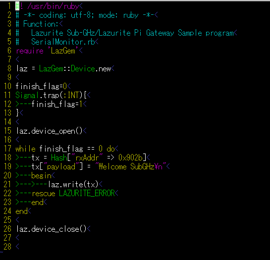

LazGemはLazurite Pi Gateway用のruby libraryです。
次のコマンドを実行してLazGemをインストールしてください。
sudo gem install LazGem⏎
LazGemのソースコードにサンプルプログラムが含まれているため、ソースコードを取得します。
サンプルプログラムを取得するディレクトリに移動し、以下のコマンドを入力してください。
git clone git://github.com/LAPIS-Lazurite/LazGem⏎
cd LazGem\sample⏎
./sample_tx.rb または、 ./sample_rx.rb
送信用サンプルプログラム
sample_tx.rb
受信用サンプルプログラム sample_rx.rb
送信用サンプルプログラムは正しい送信先に合わせてプログラムの18行目のrxAddr(受信アドレス)を変更してください。
